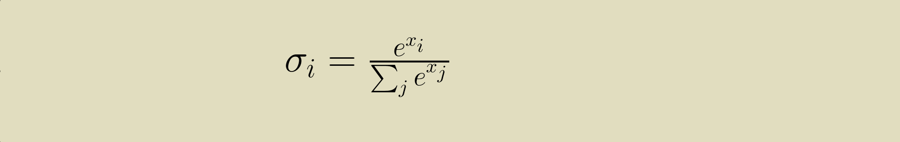
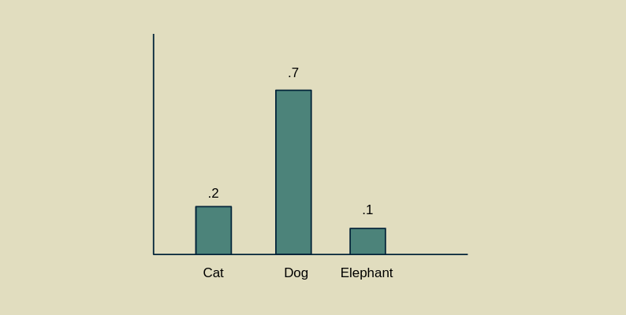
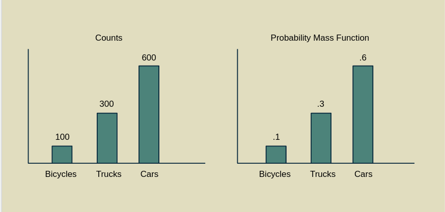
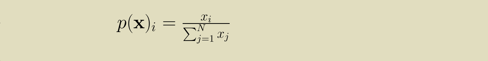
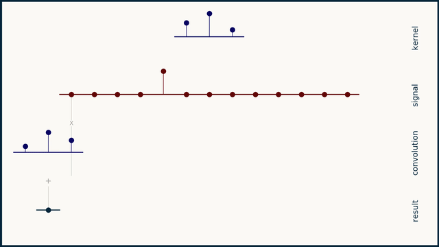

part of Course 322 Two Dimensional Convolutional Neural Networks
tl;dr

In Python:
softmax = exp(x) / sum(exp(x))
Softmax is an activation function that turns an array of values into probability mass function where the weight of the maximum value is exaggerated.
Why softmax?
Softmax is tailor made for multi-class categorization problems like the MNIST or CIFAR datasets. It's ideal for converting the result of a linear layer into vote for a category. It works best across a wide range of input values, so it takes the place of other activation functions, like sigmoid (logistic) or rectified linear units (ReLU). The softmax emphasizes the strongest vote and so focuses the learning on the parameters that will strengthen that vote. It's also relatively cheap to compute.
Probability mass function (PMF)
One reason softmax is so appealing is that it fits in well with statistics and information theory. It is a probability mass function, a collection of values, each associated with a separate and exclusive outcome, that are all between zero and one and add up to one. This lets us interpret the output of the softmax as degrees of belief. If a softmax layer gives us the values .2, .7, and .1 for the categories "cat", "dog", and "elephant", we can explain that as the model believing with 20% strength that the image contains a cat, 70% that it contains a dog, and 10% that it contains an elephant. Alternatively, if we were using the model to place bets, we would estimate the odds of there being an elephant at 1:9, a cat at 1:4 and a dog at 7:3. All the tricks we can do with probabilities, we can now apply to the result of the softmax, a PMF of our expectations about the category membership of the example.

PMF normalization
You can make a PMF out of any set of values, provided they aren't negative. Counted values are a classic case. Imagine I was sitting on the street corner watching people drive by. I could count vehicles by type: car, truck, bicycle. Suppose that after an hour I had counted 100 bicycles, 300 trucks, and 600 cars. Now I want to figure out how likely it is that the next vehicle will be a bicycle. I can turn my histogram of counts into a probability mass function by dividing each count by the sum of all the observations I've made (100 + 300 + 600 = 1000). This gives a PMF of bicycles = .1, trucks = .3 and cars = .6.

This method of converting counts (frequencies) to probabilities is a hallmark of a frequentist approach to statistics, as opposed to a Bayesian approach.
Expressed in equations, we start with an array of values [x1, x2, ... xN-1, xN], which we can call x for short. To convert x into the PMF p(x we can perform PMF normalization.

Softmax as a PMF normalization of exponentials
Softmax is very like a PMF normalization, with the exception that all of the elements of x are first passed through an exponential function (e is raised to power of each xi).
Derivative of a PMF normalization
Derivative of softmax
Python implementation
Backpropagation
Gotchas
Softmax is an activation function in its own right. If you use it together with another activation function that limits the range, like logistic or hyperbolic tangent, then its effectiveness will be greatly diminshed. Softmax is sensitive to the differences between values, so you don't want to compress them into a small range before applying it.
Because it's a PMF, softmax is appropriate for categorization tasks where each example only belongs to one category. The whole premise behind the softmax is that it emphasizes the value with the highest value, the category with the greatest affinity, at the expense of all others. Multi-label classification problems (say, where a photo could be tagged as both "person" and "dog" if it has both a persona and a dog in it) break this assumption. For multilabel problems the logisitic activation function is your best bet. It represents the affinity of every label separately on a zero to one scale. For some medical examples, check out this article by Rachel Draelos.
References and resources
This story was synthesized from the rich collection of online content on the topic.
- The Wikipedia article
- Victor Zhou's post
- Eli Bendersky's post
- Aerin Kim's post
- Antoni Parellada's Cross Validated post

To walk through the process of implementing this in a Python machine learning framework, come join us in e2eML Course 322. It's a work in progress, to be complete October 1.